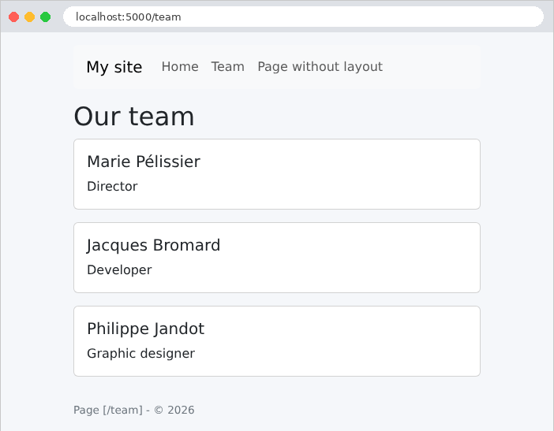
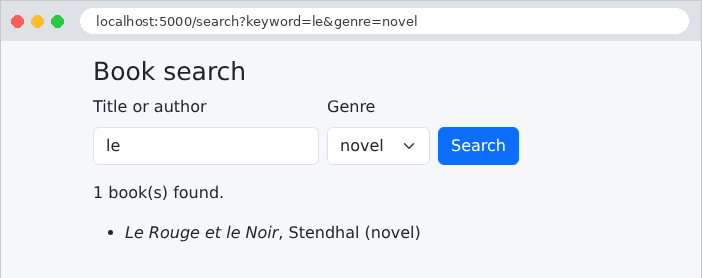
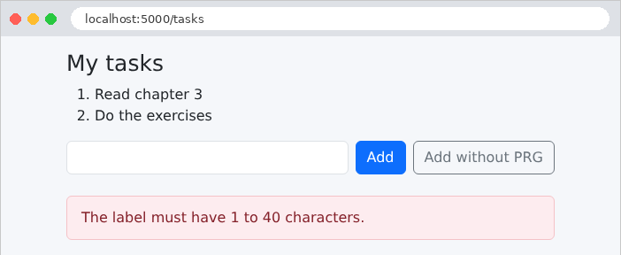

4. La vista y su modelo
Hasta ahora, las acciones generaban sus propias respuestas: texto, JSON y algunas etiquetas HTML escritas en una cadena. En una aplicación MVC, este es el papel de una vista: un archivo que describe la página HTML, con marcadores de posición para los datos que le pasa la acción, el modelo de vista.
[Flask] incluye un motor de vistas, [Jinja2], escrito por el mismo equipo (el proyecto *Pallets*). Se pueden usar otros motores ([Mako], [Chameleon]...), pero [Jinja2] es, por mucho, el más utilizado en [Python]: se encuentra en [Django] (como opción), en [Ansible], en generadores de sitios estáticos... Es el que se usa en este curso.
Una vista [Jinja2] (la documentación la llama *template*, una plantilla de página) es un archivo de texto, en este caso HTML, en el que se interpretan tres tipos de etiquetas en el servidor:
- [{{ expression }}]: el valor de una expresión, insertado en la página;
- [{% instruction %}]: una instrucción: condición ([if]), bucle ([for]), herencia de plantillas ([extends], [block]), inclusión ([include]), macro...;
- [{# comment #}]: un comentario que no aparece en la página generada.
Todo lo demás se copia tal cual. La sintaxis de las expresiones es similar a la de [Python]. Esto difiere de [Thymeleaf], el motor de vistas del curso [Spring MVC], cuyas vistas son archivos HTML válidos enriquecidos con atributos [th:]; en cambio, acerca [Jinja2] a [Razor] ([ASP.NET Core MVC]), que mezcla HTML y código. De forma predeterminada, [Flask] busca las vistas en la carpeta [templates] de la aplicación.
4.1. Ejemplo 13: Una primera vista
4.1.1. El modelo de la vista: models/page.py
El modelo de la vista es una simple [dataclass] (véase el ejemplo 06): las tres informaciones que mostrará la vista. No es obligatorio definir el modelo de una vista como una clase: se podrían pasar tres variables separadas a la vista. Sin embargo, una clase documenta lo que la vista espera y permite que el editor verifique el código de la acción. Este es el enfoque que seguirá el caso de estudio, donde cada vista tiene su propia clase de modelo.
4.1.2. El controlador: controllers/views.py
- línea 4: importa la función [render_template];
- líneas 16–19: la acción construye el modelo de la vista. [datetime.now().strftime("%H:%M:%S")]: la hora actual, formateada (véase el ejemplo 12);
- línea 20: [render_template] indica a [Jinja2] que genere la página: el primer parámetro es la ruta de la vista, relativa a la carpeta [templates]; los parámetros con nombre que siguen son las variables de la vista; en este caso, solo hay una: [model]. [render_template] devuelve el texto de la página generada, que se convierte en la respuesta de la acción (de tipo [text/html]);
- línea 28: otra vista, con una variable diferente ([name]). La tupla [(page, 404)] envía la página con un código de estado 404 (véase el ejemplo 03): una página de error personalizada;
- Líneas 29–33: la misma vista que la acción [index], con una plantilla diferente. Esta es la ventaja de separar las acciones de las vistas: una sola vista puede ser utilizada por varias acciones.
4.1.3. La vista: templates/views/index.html
- línea 5: un comentario [Jinja2];
- Línea 6: [{{ model.title }}] inserta el valor del atributo [title] de la variable [model]. La notación de punto de [Jinja2] es más flexible que la de [Python]: [model.title] busca primero un atributo [title] y, si no lo encuentra, una clave ["title"] (si [model] es un diccionario). Por lo tanto, el código de la vista no necesita saber si su modelo es un objeto o un diccionario.
Todo lo que inserta [{{ }}] se escapa: los caracteres [<], [>], [&], ["] y ['] se reemplazan por sus códigos de entidad HTML. Este es el papel que desempeñaba la función [escape] en el ejemplo 09, pero esta vez es automático: [Flask] activa el escape automático (*autoescape*) para las vistas cuyos nombres terminan en [.html], [.htm], [.xml], [.xhtml], o [.svg]. Esto evita que una vista inserte por descuido en la página el HTML proporcionado por un usuario.
4.1.4. La vista: templates/views/unknown.html
Una vista no está obligada a recibir un objeto: la variable [name] es una cadena.
4.1.5. Ejecución


La respuesta sin procesar muestra el trabajo realizado por [Jinja2]: las etiquetas [{{ }}] han sido reemplazadas por sus valores, y el comentario ha desaparecido (en su lugar queda una línea vacía; veremos en el próximo ejemplo cómo evitarlo).
La página de error “personalizada”, seguida de un nombre que contiene HTML ([<b>martin], codificado en la URL):
La etiqueta [<b>] fue escapada sin que interviniera ninguna acción ni vista.
4.2. Ejemplo 14: El lenguaje Jinja2
Este ejemplo combina las principales construcciones de [Jinja2] en una sola vista.
4.2.1. El modelo y la acción
El modelo contiene valores de diversos tipos: cadenas, [None], booleanos, listas de objetos, listas vacías y objetos que contienen otros objetos. El tipo [Decimal], del módulo estándar [decimal], representa con exactitud los números decimales (a diferencia del tipo [float], para el cual [0.1 + 0.2] es igual a [0.30000000000000004]); es el tipo que se debe usar para los importes.
La acción construye el modelo y se lo pasa a la vista. [Decimal("12.5")]: un decimal se construye a partir de una cadena para evitar el uso de un [float] inexacto.
4.2.2. Configuración: app.py
- Líneas 12–13: [app.jinja_env] es el entorno [Jinja2] de la aplicación, el objeto que carga y ejecuta las vistas. De forma predeterminada, una etiqueta [{% %}] que está sola en su línea deja en la página generada los espacios que la preceden y el salto de línea que la sigue: un bucle produciría numerosas líneas vacías. [trim_blocks] elimina el salto de línea que sigue a una etiqueta, mientras que [lstrip_blocks] elimina los espacios que la preceden. Estos dos ajustes no afectan la visualización de la página (el navegador ignora estos caracteres de espacio en blanco), pero hacen que el HTML generado sea más legible. Todos los ejemplos siguientes los activan.
4.2.3. La vista: templates/basics/index.html
- Líneas 9–10: [{% set %}] crea una variable de vista. Los filtros transforman un valor: [value | filter] o [value | filter(parameters)]. El filtro [sum(attribute="price")] suma los atributos [price] de los elementos de una lista; el filtro [length] devuelve la longitud de una lista. [Jinja2] ofrece unos cincuenta filtros: [upper], [lower], [title], [trim], [join], [sort], [round], [default], [replace], [truncate]... ;
- línea 15: el valor [None] se muestra... [None]. El filtro [default(value, true)] reemplaza un valor “vacío” ([None], cadena vacía, cero) por el valor especificado; sin el segundo parámetro [true], solo reemplazaría una variable no definida;
- líneas 17–18: [{{ }}] escapa el HTML (2a); el filtro [safe], en cambio, declara que el valor es HTML seguro, que debe insertarse tal cual (2b). [safe] se reserva para el HTML generado por la propia aplicación, nunca para datos ingresados por el usuario;
- líneas 20–24: una condición: [{% if %}], [{% elif %}], [{% else %}], [{% endif %}]. A diferencia de [Python], cuyos bloques se delimitan por la indentación, [Jinja2] cierra cada bloque con una etiqueta [end...];
- líneas 28–34: un bucle [{% for %}] ... [{% endfor %}]. Dentro del bucle, la variable especial [loop] describe el estado del bucle: [loop.index] (el número de iteración, empezando en 1), [loop.index0] (empezando en 0), [loop.first], [loop.last] (verdadero en la primera y en la última iteración), [loop.length] (el número de elementos). Las variables externas al bucle ([model.name]) siguen siendo accesibles;
- línea 30: la expresión condicional de [Python], [a if condition else b], es también la de [Jinja2];
- Línea 38: un bucle [for] puede contener un bloque [{% else %}], que se ejecuta si la lista está vacía. Esto es más simple que un [if] que verifique la longitud de la lista;
- Líneas 41–42: expresiones calculadas ([total / count]). El filtro [format] aplica un formato similar al del operador [%] de [Python]: ["%.2f"] muestra un número con dos decimales. En el ejemplo 16 veremos una manera mucho mejor de dar formato a números e importes;
- línea 44: la notación de punto recorre objetos ([model.address.city]) y permite llamar a sus métodos: [upper()] es un método de las cadenas de [Python];
- línea 45: una dirección de correo electrónico, escrita tal cual. El carácter [@], que tiene un significado específico en otros motores de vistas ([Razor]), no tiene ese significado en [Jinja2]: solo se interpretan las etiquetas [{{ }}], [{% %}], y [{# #}] .
4.2.4. Ejecución

La página generada:
Los comentarios han desaparecido, y las etiquetas [{% %}] no dejaron líneas en blanco. El formato de ciertas líneas (“[- the first one </li>]”) muestra que [trim_blocks] y [lstrip_blocks] también afectan a las etiquetas ubicadas a mitad de una línea; esto no tiene efecto en el navegador.
4.3. Ejemplo 15: Plantilla, fragmentos y archivos estáticos
Las páginas de un sitio web suelen compartir la misma estructura: un encabezado, una barra de navegación, un pie de página y las mismas hojas de estilo. En lugar de repetir esta estructura en cada vista, se escribe una sola vez en una plantilla (*layout*), que las páginas extienden. Este ejemplo usa además [Bootstrap], el framework CSS más utilizado, para los estilos.
4.3.1. Archivos estáticos
Una página HTML hace referencia a otros archivos: hojas de estilo, scripts [JavaScript] e imágenes. Estos archivos, que el servidor envía tal cual, se llaman archivos estáticos. [Flask] sirve automáticamente el contenido de la carpeta [static] de la aplicación bajo la URL [/static/...]: el archivo [static/css/styles.css] está disponible en la URL [/static/css/styles.css].
Algunas reglas CSS adicionales además de [Bootstrap]: un fondo gris claro, el estilo del pie de página y el estilo de una zona de error que se usará en los ejemplos siguientes.
[Bootstrap], por su parte, es utilizado por los ejemplos 15 a 28. En lugar de colocar una copia en la carpeta [static] de cada ejemplo, estos lo comparten: se encuentra en la carpeta [examples/common/bootstrap]. Por lo tanto, hay que indicarle a [Flask] que use también esta carpeta. Este es el propósito de las siguientes líneas de [app.py]:
- Línea 11: la ruta de la carpeta [common/bootstrap]. [Path], del módulo estándar [pathlib], representa la ruta de un archivo. [Path(__file__)] es la ruta del propio archivo [app.py] ([__file__] es una variable que [Python] define en cada módulo); [resolve()] la convierte en absoluta; [parent] designa la carpeta que la contiene ([15-layout]), [parent.parent] designa la carpeta superior ([examples]); el operador [/] agrega un elemento a la ruta. Especificar la carpeta a partir de la ubicación del archivo, y no de la carpeta actual, permite iniciar la aplicación desde cualquier carpeta;
- líneas 20–21: un blueprint puede tener su propia carpeta de archivos estáticos ([static_folder]), servida bajo la URL especificada ([static_url_path]). Este blueprint solo contiene eso: no tiene rutas. El archivo [common/bootstrap/css/bootstrap.min.css] se sirve así en la URL [/bootstrap/css/bootstrap.min.css];
- Líneas 26–28: un procesador de contexto es una función que [Flask] ejecuta antes de generar cada vista. Devuelve un diccionario, cuyos pares clave-valor se agregan a las variables de la vista. Aquí, [path] (la ruta de la URL solicitada) y [year] (el año actual) quedan así disponibles en todas las vistas, sin que las acciones tengan que proporcionarlas. La plantilla los usa para su pie de página.
4.3.2. La plantilla: templates/layout.html
- línea 6: la etiqueta [viewport] indica a los navegadores móviles que muestren la página con el ancho de la pantalla, que es lo que espera [Bootstrap];
- línea 8: un bloque es un contenedor con nombre que pueden llenar las páginas que extienden la plantilla. El contenido escrito entre [{% block title %}] y [{% endblock %}] es el contenido predeterminado del bloque, utilizado por una página que no lo redefine;
- líneas 10–11: [url_for], que conocemos por las acciones (ejemplo 04), también genera la URL de un archivo estático: [static] designa la carpeta estática de la aplicación, [bootstrap.static] la del blueprint [bootstrap]; [filename] es la ruta del archivo dentro de esa carpeta. [url_for] está disponible en todas las vistas. Escribir la URL manualmente ([/static/css/styles.css]) también funcionaría, pero [url_for] se adapta si se mueve la carpeta o si la aplicación se instala bajo un prefijo de la URL;
- línea 16: [{% include %}] inserta el contenido de otra vista, en este caso la barra de navegación. La vista incluida tiene acceso a las variables de la vista que la incluye;
- línea 19: el bloque que cada página llena con su propio contenido. Está vacío de forma predeterminada;
- línea 22: el pie de página usa las dos variables del procesador de contexto.
La clase [container] de [Bootstrap] centra el contenido y limita su ancho; [py-3] agrega un relleno vertical: [Bootstrap] ofrece cientos de clases de este tipo, que se combinan en el atributo [class].
4.3.3. La barra de navegación: templates/fragments/navbar.html
Un fragmento: una sección de una página que no tiene sentido por sí sola. Las clases [navbar], [navbar-brand] y [nav-link] son las de la barra de navegación de [Bootstrap].
4.3.4. Una macro: templates/fragments/card.html
- Líneas 2–9: una macro es un fragmento de página que tiene parámetros; esta es una función de [Jinja2]. Al llamarla, [{{ card("name", "role") }}], se inserta el fragmento de página generado con esos valores. Los parámetros pueden tener un valor predeterminado, como en [Python]: [{% macro card(name, role="") %}]. La tarjeta ([card]) es un componente de [Bootstrap].
4.3.5. Las páginas
- Línea 2: la página extiende la plantilla: [Jinja2] genera la página de la plantilla, reemplazando sus bloques por los que la página redefine. [{% extends %}] debe ser la primera etiqueta de la vista. En una vista que extiende una plantilla, el texto escrito fuera de los bloques no aparece en la página generada (sin embargo, las instrucciones [{% set %}] conservan allí su efecto; lo veremos en el capítulo sobre internacionalización);
- línea 4: la importación de la macro [card], definida en otro archivo;
- línea 6: el bloque [content] de la plantilla, redefinido. La página no redefine el bloque [title]: conserva su contenido predeterminado, “Home”;
- Línea 11: la llamada a la macro.
- línea 4: esta página también redefine el título;
- líneas 9–14: una tarjeta por cada miembro del equipo, en una cuadrícula que usa [Bootstrap] ([row], [col-md-4]: tres columnas en una pantalla mediana o grande, una columna en un teléfono).
El controlador no contiene nada nuevo:
Por último, la tercera página no usa la plantilla:
4.3.6. Ejecución



La página del equipo, tal como la recibe el navegador:
El navegador recibió una página completa: la plantilla, el fragmento, la página y las macros se ensamblaron en el servidor. Las URL de las hojas de estilo fueron calculadas por [url_for]. Se puede verificar que el archivo de [Bootstrap] se sirve correctamente (la opción [-I] de [curl] muestra solo los encabezados de la respuesta):
4.4. Ejemplo 16: Helpers
Una vista suele necesitar dar formato a valores: un importe con su moneda, una fecha escrita completa o un texto en mayúsculas. Este código no pertenece a la acción (que no se ocupa de la presentación) y sería engorroso de escribir en la vista. En cambio, se escribe en [Python], dentro de funciones que las vistas llaman: son los helpers de la vista. [Jinja2] reconoce tres tipos: los filtros ([{{ price | money }}]), las funciones globales ([{{ uppercase(name) }}]) y las macros, que ya hemos visto.
4.4.1. Funciones: helpers/formats.py
- líneas 11–12: una función normal que acepta [None];
- Líneas 18–19: formato de un importe. Depende del idioma: en francés, [1 149,90 €] (espacio para separar los miles, coma decimal, símbolo después del importe); en inglés, [€1,149.90]. La biblioteca [Babel] admite las convenciones de todos los países (usa datos del proyecto Unicode *CLDR*): [format_currency(amount, currency, locale=...)] da formato a un importe, con la moneda designada por su código internacional ([EUR], [USD]). La configuración regional ([fr_FR], [en_US]) especifica un idioma y un país. Aquí, se lee de [g.locale], que examinaremos a continuación;
- líneas 23–24: [format_date] da formato a una fecha; el formato [full] la escribe completa, incluido el día de la semana.
4.4.2. La configuración: app.py
- Líneas 23–25: el idioma del formato depende de la solicitud: el parámetro [?lang=fr] de la URL selecciona el francés; el inglés es el idioma predeterminado. [@app.before_request] registra una función que [Flask] ejecuta antes de cada acción (el capítulo sobre el ciclo de vida de la solicitud detallará estos “hooks”). Almacena la configuración regional en [g], un objeto de [Flask] que, al igual que [request], es específico de la solicitud en curso: se puede almacenar en él lo que se desee ([g.locale = ...]); se descarta al final de la solicitud. Esta es la manera de compartir información entre las distintas funciones que procesan la misma solicitud, sin pasarla como parámetro de una a otra. El capítulo sobre los ámbitos de datos retomará este tema;
- líneas 28–29: registro de dos funciones como filtros de [Jinja2] bajo sus nombres. Un filtro recibe como primer parámetro el valor colocado antes de [|]; los parámetros siguientes son los del filtro: [{{ price | money("USD") }}] llama a [money(price, "USD")];
- Línea 31: registro de una función como función global de vista.
El decorador [@app.template_filter()] (aplicado a la propia función) es otra manera de registrar un filtro. Llamar a [add_template_filter] desde [app.py] tiene la ventaja de mantener el módulo [helpers/formats.py] independiente de [Flask] (con la excepción de [g]).
4.4.3. El controlador: controllers/pages.py
Las acciones pasan valores sin procesar a las vistas: un [date], algunos [Decimal]. El formato lo manejan las vistas.
4.4.4. Las vistas
- Líneas 4–7: una macro que crea un enlace para la barra de navegación. Al enlace de la página actual se le asigna la clase [active] de [Bootstrap], que lo resalta. La variable [request] (la solicitud actual) está disponible en todas las vistas, al igual que [g], [url_for], y [session] (véase el capítulo sobre los ámbitos). La expresión condicional de la línea 5 trata por separado la página de inicio, cuya ruta, [/], es el punto de partida de todas las demás;
- línea 6: una expresión condicional sin [else] devuelve una cadena vacía si la condición es falsa;
- línea 13: lo mismo, escrito directamente en la vista, sin una macro. La macro evita repetir la condición en cada enlace;
- línea 18: un parámetro de [url_for] que no es una variable de la ruta se agrega a la URL como parámetro: [/products?lang=fr].
- Línea 3: una insignia de [Bootstrap], verde ([text-bg-success]) o roja ([text-bg-danger]), según el inventario;
- Línea 4: el operador [~] de [Jinja2] concatena dos valores convirtiéndolos en cadenas ([+] se negaría a sumar un entero y una cadena). Los guiones de [{{-] y [-}}] eliminan los espacios en blanco (espacios y saltos de línea) que preceden o siguen a la etiqueta: el texto de la insignia queda así pegado a sus etiquetas.
- línea 7: la llamada al filtro “personalizado”;
- línea 9: el objeto [g] es accesible en las vistas.
- Línea 13: la llamada a la función global;
- líneas 14–15: el filtro [money], primero con su moneda predeterminada y luego con un parámetro;
- línea 17: la llamada a la macro importada.
La plantilla [layout.html] es una versión simplificada de la del ejemplo 15.
4.4.5. Ejecución


La misma página, con el parámetro [?lang=fr]. Solo cambia el formato de los números: el texto en sí está escrito directamente en las vistas. El capítulo sobre internacionalización también traducirá el texto.

Un extracto del HTML produce:
4.5. Ejemplo 17: Un formulario GET
Un formulario HTML envía sus campos al servidor de una de dos maneras, según su atributo [method]:
- [method="get"]: los campos se agregan a la URL como parámetros ([/search?keyword=le&genre=novel]). Este es el método que usa un formulario que realiza una consulta: una búsqueda o un filtro. La URL que contiene los resultados puede guardarse como marcador, compartirse o recargarse sin riesgo;
- [method="post"]: los campos se incluyen en el cuerpo de la solicitud (véase el ejemplo 11). Este es el método que usa un formulario que modifica datos: un registro, una adición o una eliminación.
Este primer formulario es una búsqueda de libros.
4.5.1. El modelo: models/books.py
- Línea 5: [frozen=True] hace que los objetos [Book] sean inmutables: una vez creados, sus atributos ya no pueden modificarse. Es una buena práctica para los datos compartidos por todas las solicitudes, como la lista de libros;
- líneas 14–18: el modelo de vista contiene los datos ingresados por el usuario (para que el formulario pueda mostrarlos de nuevo), la lista de géneros sugeridos y los resultados.
4.5.2. El controlador: controllers/books.py
- líneas 8–16: los datos, escritos directamente en el código para este ejemplo. [BOOKS] es una tupla (entre paréntesis), una secuencia inmutable. Por convención, los nombres en mayúsculas indican constantes;
- líneas 21–22: dos decoradores de ruta en la misma acción: responde a ambas URL. En la primera visita ([/]), no hay parámetros: se muestran todos los libros;
- líneas 24–25: los campos del formulario se leen como parámetros de la URL (ejemplo 07). El segundo parámetro de [get] es el valor predeterminado;
- líneas 27–29: filtrado mediante una comprensión de listas con una condición ([if]): un libro se selecciona si la palabra clave está vacía o aparece en su título o en su autor (en minúsculas en ambos lados), y si el género está vacío o coincide con el género del libro;
- línea 31: la plantilla de la vista.
4.5.3. La vista: templates/books/search.html
- línea 6: la etiqueta [<form>]. El atributo [action] es la URL a la que se envía el formulario; [method="get"] coloca los campos en la URL. Las clases de [Bootstrap] disponen los campos en una sola línea;
- Línea 8: una etiqueta (label). Su atributo [for] especifica el identificador ([id]) del campo que describe: al hacer clic en la etiqueta, el cursor se coloca en el campo, y los lectores de pantalla leen la etiqueta junto con el campo;
- Línea 10: un campo de entrada. Su atributo [name] es el nombre del parámetro enviado al servidor: este es el vínculo entre el formulario y la acción ([request.args.get("keyword")]). El atributo [value] es el valor mostrado: el dato ingresado anteriormente, mostrado de nuevo (y escapado por [{{ }}], lo cual es esencial en un atributo: un dato que contenga una comilla ["] cerraría el atributo en caso contrario);
- líneas 14–20: una lista desplegable. Cada [<option>] tiene un valor ([value]), que se envía al servidor, y un texto, que se muestra. La primera opción, con un valor vacío, significa “todos los géneros”;
- línea 18: a la opción seleccionada en la solicitud anterior se le asigna el atributo [selected]. Es un atributo booleano: basta con su presencia; no tiene valor. La expresión condicional sin [else] determina si se escribe o no;
- línea 23: el botón de envío ([type="submit"]);
- línea 26: el número de resultados.
4.5.4. Ejecución

Ingresemos [le] y seleccionemos el tipo [novel]:

La URL de la página de resultados contiene los campos del formulario: [/search?keyword=le&genre=novel]. La respuesta del formulario:
“Madame Bovary” no está seleccionado: “le” no aparece ni en el título ni en el nombre del autor.
4.6. Ejemplo 18: Campos de formulario
Escribir manualmente el HTML de cada campo, volver a mostrar su valor, marcar las casillas correctas y seleccionar las opciones correctas es un trabajo repetitivo y propenso a errores. La biblioteca [WTForms] lo hace por nosotros. Allí, un formulario se describe mediante una clase, donde cada atributo es un campo; cada campo sabe cómo:
- cómo enlazarse (binding) con la solicitud: leer su valor de los datos enviados y convertirlo a su tipo;
- validarse a sí mismo, según su lista de validadores (ejemplo 19);
- mostrarse en HTML, junto con su valor actual.
La extensión [Flask-WTF] integra [WTForms] en [Flask]: sus formularios leen por sí mismos la solicitud actual, y están protegidos contra los ataques CSRF (hablaremos de ello más adelante). Este ejemplo muestra todos los tipos de campos de un formulario HTML.
4.6.1. El servicio de listas: services/lists.py
Las listas desplegables del formulario (títulos, países, pasatiempos, idiomas) las proporciona un servicio, siguiendo el modelo del ejemplo 06: en una aplicación real, provendrían de una base de datos. Cada opción es un par [(value, text)]: el valor enviado al servidor y el texto mostrado. [[(t, t) for t in (...)]] crea pares en los que ambos elementos son idénticos. La función [lists_service] hace único el objeto, almacenado en [app.extensions] por [app.py]:
- línea 19: [app.config] es la configuración de la aplicación, un diccionario. La clave [SECRET_KEY] es la clave secreta de la aplicación: [Flask] y sus extensiones la usan para firmar los datos confiados al navegador, es decir, para agregarles una huella digital que solo el poseedor de la clave puede calcular. Así se detecta cualquier modificación de los datos por parte del navegador. [Flask-WTF] la necesita para sus tokens anti-CSRF; volveremos a verla en la cookie de sesión (ejemplo 20). En producción, es una cadena aleatoria larga que nunca debe aparecer en el código fuente (el capítulo sobre autenticación la leerá de una variable de entorno);
- Línea 21: el servicio único compartido por todas las solicitudes.
4.6.2. El formulario: models/input.py
- Líneas 14–16: [WTForms] no tiene un campo de “casillas de verificación”. Sin embargo, un grupo de casillas con el mismo nombre es, para el servidor, una lista de selección múltiple: envía cero, uno o más valores. Por lo tanto, creamos una clase derivada de [SelectMultipleField] que cambia solo su presentación: el widget de un campo es el objeto que genera su HTML; [ListWidget] presenta una lista de opciones, y cada opción es presentada por [CheckboxInput], una casilla de verificación;
- línea 21: el formulario hereda de [FlaskForm], la clase base de [Flask-WTF];
- líneas 22–32: los campos. El primer parámetro es la etiqueta. Cada clase de campo corresponde a un elemento HTML:
Campo WTForms | Elemento HTML generado |
[StringField] | [<input type="text">] |
[PasswordField] | [<input type="password">], nunca rellenado previamente |
[HiddenField] | [<input type="hidden">], un campo invisible |
[DateField] | [<input type="date">], cuyo valor se convierte a [date] |
[IntegerField], [EmailField] | [<input type="number">], [<input type="email">] (ejemplo 19) |
[RadioField] | un grupo de botones de opción: un solo valor |
[SelectField] | una lista desplegable [<select>]: un solo valor |
[SelectMultipleField] | una lista [<select multiple>]: varios valores |
[TextAreaField] | un cuadro de texto [<textarea>], de varias líneas |
[BooleanField] | una única casilla de verificación, convertida a booleano |
- Línea 28: el validador [Optional()] permite que el campo quede vacío (de lo contrario, la conversión de una cadena vacía a fecha fallaría). Un campo [<input type="date">] intercambia sus valores con el servidor en el formato [yyyy-mm-dd], independientemente del formato en que el navegador lo muestre;
- líneas 35–41: los campos desplegables requieren su lista de opciones ([choices]). Esta lista se proporciona cada vez que se crea el formulario, en el constructor, mediante el método [__init__]. Primero llama al constructor de la clase padre ([super().__init__(...)]), pasándole todos sus parámetros, y luego completa los campos. Un campo [title] declarado a nivel de clase se convierte, dentro del objeto, en un campo vinculado ([self.title]) propio de este formulario.
4.6.3. El controlador: controllers/form.py
- línea 12: un formulario creado durante una solicitud (GET) no lee nada: sus campos toman los valores pasados al constructor (parámetros con nombre, uno por campo) o quedan vacíos. Estos son los valores iniciales del formulario;
- línea 13: el propio formulario se pasa a la vista, que lo presentará;
- línea 19: durante una solicitud POST, [FlaskForm] lee por sí mismo los campos enviados ([request.form]): cada campo toma el valor recibido, convertido a su tipo;
- línea 21: [validate()] ejecuta los validadores de cada campo y devuelve [True] si todos se cumplen. Los campos desplegables verifican automáticamente que el valor recibido esté entre sus opciones: un usuario malintencionado puede enviar cualquier cosa, no solo lo que ofrecía la página. [Flask-WTF] agrega a esto una verificación del token anti-CSRF;
- líneas 23–24: para el ejemplo, la lista de lo que el navegador realmente envió: [request.form.lists()] devuelve, para cada parámetro, su nombre y la lista de sus valores. [", ".join(...)] los combina en una sola cadena.
4.6.4. La vista: templates/form/form.html
- Línea 5: un formulario POST;
- línea 7: el campo oculto que contiene el token anti-CSRF. Un ataque CSRF (*Cross-Site Request Forgery*) consiste en que un sitio malicioso engañe al navegador de la víctima para que envíe un formulario a nuestra aplicación. El navegador incluye las cookies de nuestra aplicación en la solicitud, y por tanto la sesión del usuario autenticado, de modo que la solicitud parece legítima. La defensa: cada formulario de nuestra aplicación contiene un token aleatorio vinculado a la sesión del usuario y firmado con la clave secreta, que el sitio malicioso no puede conocer. [Flask-WTF] rechaza todo formulario POST cuyo token falte o no sea válido;
- línea 8: un campo se presenta llamándolo, o simplemente insertándolo en la página mediante [{{ }}] (lo que equivale a llamarlo sin parámetros). El HTML que produce no se escapa: [WTForms] lo marca como seguro (sin embargo, los valores que coloca en él sí se escapan);
- Líneas 13–18: un grupo de botones de opción. Al recorrerlo con un bucle, el campo presenta sus opciones, una por botón: cada una se dibuja ([option(...)]) y tiene su propia etiqueta ([option.label(...)]). Todos los botones de opción comparten el mismo atributo, [name]: solo uno está seleccionado a la vez, y solo se envía un valor;
- líneas 24–25: la etiqueta y el campo de entrada. Los parámetros con nombre de la llamada se convierten en atributos HTML: [class="form-control"]. Dado que el término [class] está reservado en [Python], [WTForms] también acepta [class_];
- línea 30: [PasswordField] nunca vuelve a mostrar el valor recibido: una contraseña no debe enviarse de ida y vuelta dentro de una página HTML;
- Líneas 41–46: casillas de verificación, con el mismo estilo que los botones de opción. También tienen el mismo [name]; sin embargo, se pueden seleccionar varias casillas, y el navegador envía entonces varios valores (por ejemplo, 10);
- línea 57: la lista de selección múltiple, mostrada en cuatro líneas ([size]);
- línea 64: el campo de texto, de dos líneas;
- líneas 70–80: la condición [is defined] es verdadera si la variable [received] ha sido pasada a la vista (mediante la acción POST). [form.errors] es un diccionario que asocia cada campo no válido con una lista de sus mensajes de error; [items()] devuelve estos pares. El filtro [join] combina los elementos de una lista.
4.6.5. Ejecución

Se ven los valores iniciales pasados al constructor: el botón de opción “Mme”, el país “France” y el idioma “French”. El HTML generado por [WTForms] (extractos):
[WTForms] escribió los atributos [id] (el nombre del campo, seguido del número de opción en los grupos), [name], [type], [value], así como [checked] y [selected] para las selecciones habituales. El token anti-CSRF es una cadena firmada. Vamos a llenar el formulario y enviarlo:

La página muestra lo que recibió el servidor: un parámetro por campo, con varios valores para las casillas de verificación y la lista desplegable; la contraseña se envió, pero no se vuelve a mostrar en su campo. El campo oculto [token] se devolvió tal cual: así es como circula, de ida y vuelta, la información que el usuario no ve (el caso de estudio lo usa para el número de versión de un registro). Sin embargo, un campo oculto no es un campo protegido: el usuario puede modificarlo con las herramientas de desarrollo de su navegador, y el servidor debe validarlo como cualquier otro campo.
Ahora vamos a enviar, con [curl], un formulario sin token y con un país que no está en la lista:
Tres errores: falta el token; el país [xx] no figura entre las opciones; no se envió ningún título (un [RadioField] exige una selección). Los mensajes están en inglés, el idioma predeterminado de [WTForms]: el ejemplo siguiente muestra cómo elegir su idioma.
4.7. Ejemplo 19: validación de formularios
Un formulario de registro, en el que cada campo tiene sus propias restricciones. Si se produce un error, el formulario se vuelve a mostrar con lo que ingresó el usuario y, debajo de cada campo con error, un mensaje.
4.7.1. El formulario: models/registration.py
- Líneas 9–10: un [WTForms] filtro es una función que transforma el valor recibido antes de la validación. Aquí elimina los espacios que rodean una cadena (una entrada como [" "] queda vacía y será rechazada por [DataRequired]). La prueba con [isinstance] protege contra un valor ausente ([None]);
- líneas 17–18: la clase interna [Meta] controla el comportamiento del formulario. [locales = ["en"]]: los mensajes que [WTForms] genera por sí mismo (una conversión imposible, una selección no válida, etc.) estarán en inglés; [WTForms] incluye sus traducciones a muchos idiomas (["fr"] daría mensajes en francés). [app.py] desactiva con este fin el mecanismo de traducción de [Flask-WTF] ([WTF_I18N_ENABLED = False]); de lo contrario, esperaría la extensión [Flask-Babel];
- líneas 23–25: el parámetro [validators] es la lista de validadores del campo, que se ejecutan en orden. Cada uno recibe su propio mensaje de error. [DataRequired] rechaza un valor vacío; [Length] limita la longitud de la cadena;
- líneas 28–30: [EmailField] genera un [<input type="email">]; el validador [Email] comprueba la sintaxis de la dirección (con la biblioteca [email-validator], que ya usa [Pydantic] en el ejemplo 08);
- líneas 34–36: [IntegerField] convierte toda la entrada. [InputRequired] exige que haya una entrada; a diferencia de [DataRequired], comprueba que se haya ingresado algo, y no si el valor convertido es “verdadero”: [DataRequired] rechazaría una edad de 0, porque [0] es falso en [Python]. [NumberRange] limita el valor;
- líneas 43–45: una regla que se aplica a dos campos: [EqualTo("password")] compara el valor de un campo con el de otro.
Los validadores también sirven para la visualización: [WTForms] deduce atributos HTML5 ([required], [maxlength], [minlength], [min], [max]) que permiten al navegador verificar la entrada incluso antes de enviarla (lo veremos más adelante). Un validador “personalizado” es una función que recibe como argumentos el formulario y el campo, y lanza una [ValidationError] (del módulo [wtforms.validators]) si el valor no es válido; también puede escribirse como un método del formulario llamado [validate_<field>]. [WTForms] ofrece otros validadores listos para usar: [Regexp] (una expresión regular), [AnyOf] (una lista de valores permitidos), [Optional]... El caso de estudio los utiliza.
4.7.2. El controlador: controllers/registration.py
- líneas 10–11: el parámetro [?html5=true] activa la validación en el navegador (véase más adelante);
- línea 24: [validate_on_submit()] devuelve [True] si la solicitud es un POST y si el formulario es válido;
- líneas 27–29: el formulario no válido se vuelve a mostrar: es el mismo objeto [form], que contiene lo ingresado por el usuario y los errores de cada campo. La variable [error] es un mensaje general que la plantilla muestra al pie de la página;
- línea 30: el formulario válido: la página de bienvenida. (El ejemplo siguiente mostrará que es mejor redirigir después de un POST exitoso.)
4.7.3. Un campo reutilizable: templates/fragments/field.html
Todos los campos se muestran de la misma manera: una etiqueta, el campo de entrada y, en caso de error, la zona resaltada en rojo y el mensaje debajo. Una macro evita tener que escribir esto cinco veces:
- línea 5: la macro recibe un campo del formulario;
- línea 8: la clase [is-invalid], procedente de [Bootstrap], enmarca el campo en rojo. Se agrega si la lista de errores del campo, [field.errors], no está vacía;
- líneas 9–11: el primer mensaje de error del campo, en un elemento [invalid-feedback] que [Bootstrap] muestra en rojo debajo de un campo [is-invalid].
4.7.4. Las vistas
- líneas 13–14: el atributo [novalidate] desactiva la validación del navegador: el formulario se envía tal cual y solo el servidor lo valida. Esto es lo que queremos observar primero. [{{-] elimina el espacio en blanco que precede a la etiqueta, de modo que el atributo quede pegado a la etiqueta [<form>];
- líneas 16–20: una llamada a la macro por cada campo.
- líneas 15–17: el mensaje general, al pie de la página, en una zona cuyo estilo se define en [static/css/styles.css] (ejemplo 15). El atributo [role="alert"] lo señala a los lectores de pantalla.
[form.name.data] es el valor del campo después del filtrado y la conversión: el nombre sin espacios y la edad como entero.
4.7.5. Ejecución
Enviemos un formulario lleno de errores: un nombre formado por espacios, una dirección sin dominio completo, una edad de 12, una contraseña demasiado corta y una confirmación distinta:

Lo ingresado se conservó (excepto las contraseñas) y cada error se indica debajo de su campo correspondiente. Con [curl], esta vez proporcionando el token anti-CSRF, también podemos enviar algo que un navegador no enviaría: una edad no numérica. El mensaje de conversión, generado por [WTForms], está en inglés, el idioma elegido por [locales]:
También se ven los atributos HTML5 deducidos de los validadores: [required], [min], [max].
4.7.6. Validación en el navegador
Quitemos el atributo [novalidate] haciendo clic en el enlace “enable it” (parámetro [?html5=true]). Entonces el navegador comprueba por sí mismo los atributos [required], [type="email"], [min], [maxlength]... antes de enviar el formulario, y muestra sus propios mensajes:

Esta validación es cómoda para el usuario: es inmediata, sin idas y vueltas con el servidor. Pero no reemplaza la validación del lado del servidor: un usuario puede desactivarla y un programa como [curl] la ignora por completo. La regla es absoluta: el servidor siempre valida; la validación en el navegador es solo una comodidad adicional.
Por fin, una entrada correcta. El nombre, ingresado con espacios a ambos lados, fue limpiado por el filtro:

4.8. Ejemplo 20: el patrón Post/Redirect/Get
Cuando una acción POST responde con una página, esa página es el resultado de un POST. Si el usuario recarga la página (presiona [F5]), el navegador vuelve a enviar la solicitud POST, tras mostrar una advertencia que pocas personas leen: el comando se envía dos veces y el mensaje se publica dos veces. El patrón Post/Redirect/Get (PRG) evita este problema: una acción POST exitosa no devuelve una página; responde con una redirección (ejemplo 04) a una página GET, que el navegador solicita de inmediato. Recargar esta página simplemente vuelve a ejecutar la acción GET.
Aún queda un problema: la página GET quiere mostrar un mensaje (“la tarea se ha agregado”), pero quien conoce ese mensaje es la acción POST, y esta no puede pasar una variable a una solicitud que todavía no ha ocurrido. La solución: un mensaje flash, publicado por la acción POST, conservado hasta la siguiente solicitud, mostrado y luego descartado.
4.8.1. El servicio: services/tasks.py
- Línea 14: la lista de tareas es compartida por todas las solicitudes. Sin embargo, el servidor de desarrollo procesa cada solicitud en un hilo distinto: dos solicitudes pueden ejecutarse al mismo tiempo y modificar la lista simultáneamente. Un cerrojo ([Lock], del módulo estándar [threading]) garantiza que un solo hilo a la vez ejecute el código que protege. El prefijo [_] indica, por convención, un atributo interno de la clase;
- línea 17: la instrucción [with] adquiere el cerrojo, ejecuta el bloque y luego lo libera, incluso si el bloque lanza una excepción. Un hilo que encuentra el cerrojo adquirido espera hasta que se libere;
- línea 18: el método devuelve una copia de la lista: quien lo llama puede recorrerla con seguridad mientras otro hilo agrega una tarea a la original.
4.8.2. El controlador: controllers/tasks.py
- líneas 18–24: la entrada se valida manualmente, sin [WTForms], para mantener el ejemplo simple. Una entrada no válida se vuelve a mostrar sin redirección: no hay nada que proteger contra un envío duplicado, ya que no se ha modificado nada;
- línea 27: [flash] define un mensaje para la siguiente solicitud;
- línea 29: la redirección a la página GET;
- líneas 34–38: el contraejemplo: una página como respuesta a un POST.
4.8.3. Las vistas
- líneas 13–15: la función [get_flashed_messages()], disponible en todas las vistas, devuelve la lista de mensajes flash pendientes y luego los descarta: solo se mostrarán una vez. La clase [alert alert-success] de [Bootstrap] los muestra en un marco verde.
- línea 14: el atributo [formaction] de un botón envía el formulario a una dirección distinta de la de su atributo [action]: así, un mismo formulario puede desencadenar dos acciones diferentes.
4.8.4. ¿Dónde se almacenan los mensajes flash?
Entre la solicitud POST y la solicitud GET siguiente, el mensaje debe almacenarse en alguna parte. [Flask] lo guarda en la sesión del usuario (véase el capítulo sobre los ámbitos). De forma predeterminada, la sesión de [Flask] no se almacena en el servidor: se guarda en una cookie enviada al navegador, que la reenvía con cada solicitud. Para impedir que el usuario la altere, la cookie se firma con la clave secreta, y por eso [app.py] la define. Examinemos esto con [curl]. La opción [-c] guarda en un archivo las cookies recibidas, mientras que la opción [-b] devuelve las del archivo:
La respuesta al POST es una redirección (código de estado 302, encabezado [Location]), acompañada de una cookie [session]. Su valor consta de tres partes separadas por puntos: los datos, codificados en Base64 (sin comprimir: [Flask] solo los comprime cuando así resultan más cortos); la fecha de la firma; y la firma. Una vez decodificados, los datos son legibles:
Por lo tanto, la sesión de una aplicación [Flask] es legible para el usuario (no está cifrada), pero a prueba de manipulaciones (está firmada): no se almacena nada secreto en ella. El atributo [HttpOnly] impide que el [JavaScript] de la página lea la cookie. Sigamos la redirección reenviando la cookie:
El mensaje se muestra y la sesión, que ahora está vacía, se elimina: el servidor devuelve una cookie vacía cuya fecha de expiración ya pasó. Una nueva solicitud GET ya no mostraría el mensaje.
4.8.5. Ejecución
Agregar una tarea: el navegador siguió la redirección; la URL es la de la página GET, que puede recargarse sin riesgo.

Una entrada no válida, vuelta a mostrar con su mensaje de error:

El contraejemplo: la página es la respuesta a un POST y su URL es [/tasks/without-prg]. Si se presiona [F5], el navegador pregunta si se desea reenviar el formulario; si se acepta, la tarea se agrega por segunda vez.

4.9. Ejemplo 21: enlaces, botones y confirmación
Un principio del protocolo HTTP: una solicitud GET no modifica nada. Los navegadores, los motores de búsqueda y las herramientas que precargan páginas siguen los enlaces libremente, sin pedir permiso al usuario. Un enlace “eliminar” ([<a href="/contacts/2/delete">]) sería, por lo tanto, peligroso: un bot que rastree el sitio eliminaría todo. En una aplicación web:
- la consulta se hace mediante un enlace ([<a href>]), que envía una solicitud GET;
- la modificación (guardar, duplicar, eliminar) se hace mediante un botón colocado en un formulario (POST), protegido por un token anti-CSRF.
Este ejemplo administra una lista de contactos y muestra una ventana de confirmación antes de cada eliminación.
4.9.1. El servicio: services/contacts.py
Un servicio en memoria, protegido por un cerrojo como el del ejemplo 20. Algunos puntos sobre [Python]:
- línea 34: la expresión entre paréntesis es un generador (véase el ejemplo 05) de los contactos cuyo ID coincide con el que se busca; [next] devuelve el primer elemento, o el valor predeterminado [None] si no existe ninguno;
- línea 38: [enumerate] recorre una lista y devuelve, para cada elemento, su índice y el elemento;
- línea 42: un contacto es inmutable ([frozen=True]); la función [replace] del módulo [dataclasses] crea una copia de él con algunos atributos modificados;
- Los métodos devuelven [None] para un contacto inexistente: le corresponde al controlador decidir la respuesta.
4.9.2. El controlador: controllers/contacts.py
- líneas 10–13: una función utilitaria: un contacto inexistente detiene la acción con una respuesta 404;
- líneas 17–23: las dos acciones GET, que no modifican nada: la lista y la ficha de un contacto;
- líneas 29–34: guardado de la ficha: una acción POST que sigue el patrón PRG. La misma URL, [/contacts/2] , es atendida por dos acciones diferentes según el método: GET muestra, POST guarda;
- Líneas 38–43: duplicación, otra acción POST, desencadenada por un segundo botón del mismo formulario;
- líneas 46–50: eliminación.
4.9.3. Protección anti-CSRF: app.py
- línea 26: en los ejemplos 18 y 19, era el formulario [WTForms] el que verificaba su token, en [validate()]. Aquí los formularios se escriben a mano, sin [WTForms]. [CSRFProtect] extiende la protección a toda la aplicación: antes de cada solicitud (POST, así como PUT, PATCH, DELETE), verifica el token y devuelve un código de estado 400 si falta o no es válido, incluso antes de llamar a la acción. Una acción no puede omitirlo. Esta es la configuración que usará el caso de estudio.
4.9.4. Las vistas
- Línea 13: un enlace, presentado como botón mediante las clases de [Bootstrap] ([btn]...): la apariencia no tiene nada que ver con el método HTTP. [url_for('contacts.details', id=contact.id)] coloca el ID en la ruta: [/contacts/2];
- líneas 15–20: un formulario POST por cada botón “Eliminar”, sin más campos que el token. La clase [d-inline] lo muestra en la misma línea que el enlace. El atributo [data-confirmation] contiene el mensaje de confirmación: los atributos [data-...] no tienen un significado predefinido y están destinados al [JavaScript] de la página;
- línea 18: la función [csrf_token()], proporcionada a las vistas por [Flask-WTF], devuelve el token anti-CSRF de la sesión; se coloca en un campo oculto llamado [csrf_token].
- líneas 16–18: dos botones de envío para el mismo formulario: “Guardar” envía el formulario a la dirección indicada por su atributo [action] y “Duplicar” lo envía a la dirección indicada por su atributo [formaction] (ejemplo 20);
- línea 19: regreso a la lista: un enlace.
4.9.5. La ventana de confirmación
El navegador puede mostrar un cuadro de confirmación (la función [JavaScript] [confirm]), pero no es muy atractivo y su apariencia depende del navegador. Aquí usamos una ventana modal de [Bootstrap], mostrada mediante unas pocas líneas de [JavaScript]. La ventana es un fragmento incluido en la plantilla y, por lo tanto, está presente, aunque oculta, en todas las páginas:
- línea 2: la clase [d-none] de [Bootstrap] oculta el elemento;
- líneas 3–4: el fondo gris y, a continuación, la ventana, se generan con las clases de [Bootstrap];
- línea 11: la posición del mensaje;
- líneas 14–15: los dos botones, de tipo [button] (no [submit]: no envían ningún formulario), que se distinguen por su atributo [data-action].
- línea 19: la ventana, incluida en todas las páginas;
- línea 21: el script, colocado al final de la página: cuando se ejecuta, los elementos que busca ya existen.
El script [static/js/app.js]:
- línea 3: el código está encerrado en una función anónima que se ejecuta de inmediato; sus variables no interfieren con las de los demás scripts de la página;
- líneas 4–6: la ventana, el lugar del mensaje y el formulario en espera de confirmación;
- líneas 9–14: para cada formulario que tiene un atributo [data-confirmation], se intercepta el evento [submit], que se dispara cuando se envía el formulario. [preventDefault()] suspende el envío; el formulario queda en espera y su mensaje ([dataset.confirmation], el valor del atributo [data-confirmation]) se muestra en la ventana, que aparece;
- líneas 19–25: un único manejador para los clics en la ventana: [event.target] es el elemento en el que se hizo clic; su atributo [data-action] indica de qué botón se trata. “Sí” envía el formulario pendiente con el método [submit()], que, a diferencia de hacer clic en un botón, no desencadena el evento [submit] (de lo contrario, la ventana reaparecería); “No” oculta la ventana.
Sin [JavaScript], el formulario simplemente se envía sin confirmación: la página sigue siendo utilizable. Esto es mejora progresiva: [JavaScript] agrega comodidad, pero la aplicación no depende de él.
4.9.6. Ejecución
La lista de contactos:

Al hacer clic en “Eliminar” se muestra la ventana de confirmación:

Después de la confirmación, el POST, la redirección y el mensaje emergente:

La ficha de un contacto, con sus dos botones de envío:

Una solicitud POST sin token anti-CSRF es rechazada por [CSRFProtect], y un contacto inexistente devuelve un error 404:
Las páginas de error siguen siendo las de [Werkzeug], en inglés. El capítulo sobre el ciclo de vida de una solicitud mostrará cómo reemplazarlas por páginas personalizadas.